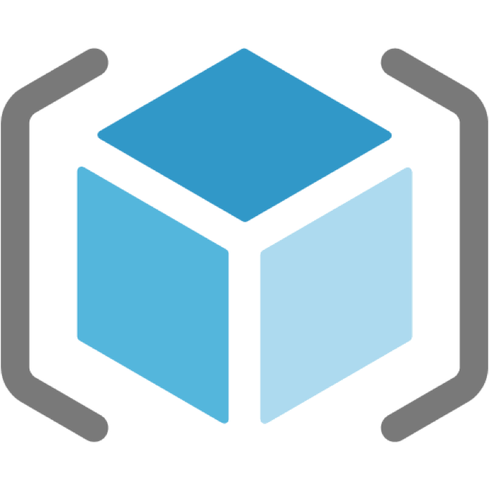

Terraform, Azure Resource Manager, Azure CLI
When working on a distributed system with many moving parts and diverse platforms, there is always need to have an easy way to manage your system altogether. Azure provides an option to use well known and proven orchestrators: Kubernetes, DC/OS, Docker Swarm. As I mentioned in one of my previous posts, if your services need to be adjustable, then Azure Container Service (ACS/AKS) might be a right tool with a lot of flexibility.
It is possible to create an ACS cluster using Azure Portal in the UI. There are many options to set up an ACS cluster in an automated, repeatable, or immutable infrastructure paradigm, and we will go through them:
- Azure CLI
- Azure Resource Manager Templates
- Hashicorp Terraform
Azure CLI
Azure CLI is a convenient way to create and manage resources. It is easy to install. In Azure CLI every command starts with az.
After installation, be sure to log in as a user, or as a service principal (i.e. if you have two factor authentication enabled).
You can also use Cloud Shell to benefit from Azure CLI and other tools right in your browser.
Prepare your ssh
Generate the ssh key pair to use when creating the ACS cluster. Here are clear instructions on how to do it.
Create a resource group
$ az group create --name <resource group name> --location <region>
Create a Kubernetes cluster
$ az acs create --orchestrator-type kubernetes --resource-group <resource group name> --name <cluster name> --ssh-key-value <public ssh key>
Where <public ssh key> is content of your .pub file (i.e. ~/.ssh/id_rsa.pub file). In case you want to skip ssh key creation step, you can use --generate-ssh-keys flag:
$ az acs create --orchestrator-type kubernetes --resource-group <resource group name> --name <cluster name> --generate-ssh-keys
In case you would like to create a managed Kubernetes cluster (AKS), the command gets even simpler:
$ az aks create --resource-group <resource group name> --name <cluster name>
Azure Resource Manager (ARM)
Azure CLI is a fast way to get ACS clusters up and running. In some cases, it is necessary to have better control over resources. Azure Resource Manager (ARM) templates are based on JSON and are a way to create a detailed hierarchical specification for resources to be provisioned as a group. Templates can run in an incremental mode. ARM is similar to Cloud Formation in AWS.
I will show you the sample with templates for creation of managed Kubernetes cluster (AKS).
There is no need to install any tools in addition to Azure CLI to use Azure Resource Manager. It is a “native” way to create Azure resources.
Create service principal
In the templates, we will need service principal id and password. Follow instructions to create service principal for Kubernetes on ACS.
Manage secrets (optional)
Keep your secrets safe, put them in Azure Key Vault. If you plan to use the Key Vault for not a single purpose, you can put it into a separate from your cluster resource group.
$ az keyvault create --name <Key Vault name> --resource-group <Key Vault resource group name>

To create a key vault, we can use az keyvault create command, and specify the name and resource group for the new vault. We also want to indicate --enabled-for-template-deployment flag for enable our Azure Resource Manager to work with the KeyVault from the templates.

After the keyvault is created, our service principal can access the values of secrets after setting the corresponding policy.
az keyvault set-policy --name <Vault name> --spn <service principal ID> --secret-permissions get 
For this example, the secret is used for service principal password. Secrets can be set in the command line:
$ az keyvault secret set --name <secret name> --vault-name <Key Vault name> --value <your value>
Or:
$ az keyvault secret set --name <secret name> --vault-name <Key Vault name> --file <name of the file to get the value from>
To see what the secret value is, we can execute:
$ az keyvault secret show --name <secret name> --vault-name <Key Vault name>
Define ARM resources
Resource Manager configuration usually consists of two primary pieces. Main file with resource definitions, and a file with parameter values. The main file (kube-managed.json) has parameters, variables, resources and outputs sections.
Each parameter in parameters section has a type and optionally description, definition of allowed values and a default value. Parameters can be of a "securestring" type if the value contains sensitive data that shouldn't be displayed.
Variables is a place where you can perform adjustments and tricks with parameters. When nesting several objects within a variable, it is possible to implement branching-like behavior. Then you can get different values depending on what is the value of a parameter passed when refering to a variable (I am not using it in the current template, but reach out if you would like more details on how to do it).
Resources section tends to be the biggest one, because this is where all resource definitions are. Each resource has a certain API version, name, type, location and properties. Properties can be unique for various types of resources. For example, we specify orchestrator type, info about master and agent VMs for the container service resource we are creating.
To make the template deployment return cetrain values, we can specify output variables. This is useful to get values like master fully qualified domain name, or ssh command in our case.
The second file (kube-deploy.parameters.json) simply sets values of defined parameters. In the current example, some sensitive values are fetched directly from the secrets of previously created Azure Key Vault. Do not forget to replace the values of parameters in your parameters file with the correct ones! Same for paths to your own Key Vault in case you are using one.
Create files for resource definition and parameters:
Provision AKS cluster with ARM templates
With resource definition templates we have everything we need to submit them to Azure Resource Manager as a deployment to start provisioning the cluster underlying infrastructure:
$ az group deployment create --resource-group <resource group name> --template-file kube-managed.json --parameters @kube-deploy.parameters.json
When not every parameter is given a value in the parameters file, you should be prompted to enter missing values in the command line.
In case the template syntax isn't correct, or there are any issues with the deployment, you can use --debug flag to inspect what is happening under the hood of deployment submission.

Keep in mind, that with new functionality coming out in Azure Container Service, “apiVersion”s of resources in Azure Resource Manager templates might change for the newly added properties. For example, “orchestratorVersion” for “orchestratorProfile”, or “storageProfile”: “ManagedDisks” for agent and master VMs can be specified starting 2017-07-01 “apiVersion”. It is also good to keep track of which regions any particular “apiVersion” is available at.
After the deployment succeeded, you should see your output variables returned!

Terraform
Terraform is a cloud vendor independent tool to create cloud resources. That means, you can even do multi cloud deployments! It supports variety of cloud providers, including Azure. With Terraform, you get the benefit of visualizing changes to your resources (whether something will be deleted, added or updated) before you actually commit those changes.
In distinction to Azure Resource Manager, Terrafrom needs to be installed locally. Is easy to install and use via the “terraform” command. It is already pre-installed in Cloud Shell. This approach comes with some benefits, for example, we can set parameters using environment variables for development and testing purposes.
Define resources in HCL
In this sample, Terraform will be used to create Azure Container Service Cluster (ACS) with Kubernetes, but not the managed one. The one where you have the privilege of maintaining the cluster on your own.
File kube-az.tf is a main file for resource definitions.
terraform.tfvars file sets the values for variables defined in variables.tf file.
Terraform resource definition files are not based on JSON, but on a Hashicorp Configuration Language (HCL).
Do not forget to put appropriate values in the terraform.tfvars file.
Provision ACS cluster with Terraform
Terraform "init" command is used to initialize a working directory containing Terraform configuration files:
$ terraform init
Terraform "plan" command is useful to see what changes are going to be planned. It will not perform those changes until you run the apply command):
$ terraform plan
To apply the changes required to reach the desired state of the configuration, or the pre-determined set of actions generated by a terraform plan execution plan, there is an "apply" command:
$ terraform apply
In action:

Overview of resources created
Kubernetes on Azure Container Service provisions master and agent virtual machines, availability sets, storage accounts or managed disks, virtual network, public ip addresses, load balancers, route table, network interfaces, network security group, and container service resources.
Connect to the cluster
After the cluster and its resources are created, we can connect to it and start executing commands.
$ az acs kubernetes get-credentials --resource-group <resource group name> --name <cluster name>
Another way to connect to the cluster is to perform steps that get-credential command performs under the hood. Get master endpoint address (it should look something like clustdnsmgmt.eastus.cloudapp.azure.com), and copy .kube/config file from the master VM to your client machine:
$ scp azureuser@<master endpoint address>:.kube/config /.kube/config

.kube/config file contains information about the cluster, such as cluster name, master endpoint, users of the cluster, client certificate data, client ket data, certificate authority data and etc.
Install and set up kubectl to check that you are connected and start working with the cluster:

$ kubectl config get-contexts

To change the context:
$ kubectl config use-context <context name>
Troubleshooting cluster setup
In case of any issues connecting to the cluster, make sure there are no errors in the logs while configuring cluster settings. ssh to the master VM and check the logs:
$ sudo su -
$ cat /var/logs/azure/cluster-creation.json
Reach out for any questions
Follow me on twitter @lenadroid if you found this article interesting or helpful. My direct messages are open, always happy to connect, feel free to reach out with any questions or ideas!